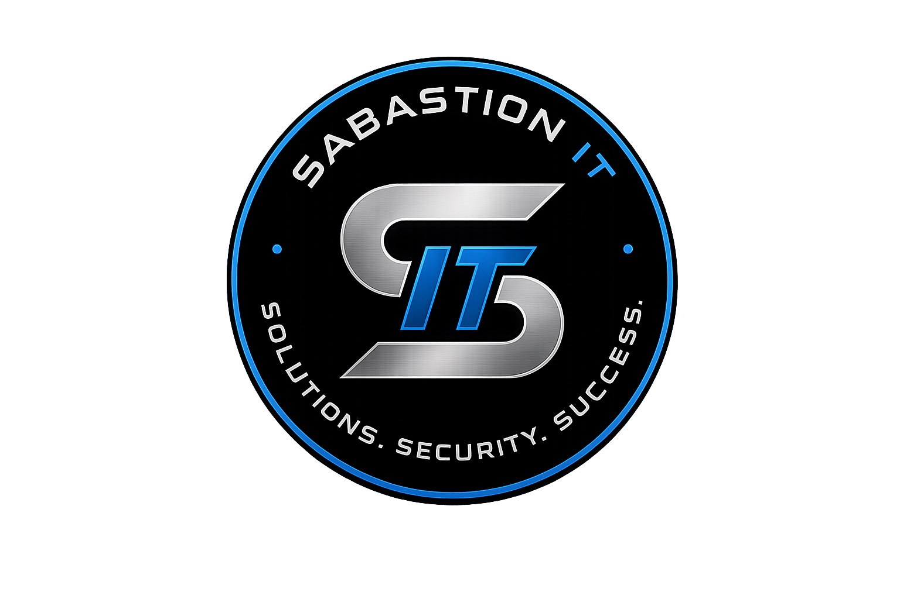

Microsoft 365 Tenant Deployment
Built and configured a Microsoft 365 business tenant with a custom domain, Exchange Online, MFA, shared mailboxes, distribution groups, and security groups.
Managed IT • Microsoft 365 • Cybersecurity
Sabastion IT helps small businesses build, secure, and support modern technology environments without needing a full-time IT department.

Security-first IT support for small business operations.
Projects
Hands-on projects showing Microsoft 365, Windows Server, Active Directory, cybersecurity hardening, automation, and infrastructure administration.
Built and configured a Microsoft 365 business tenant with a custom domain, Exchange Online, MFA, shared mailboxes, distribution groups, and security groups.
Deployed a Windows Server Active Directory environment with domain controllers, DNS, DHCP, user accounts, admin accounts, and replication.
Configured password policies, mapped drives, desktop shortcuts, shared folders, permissions, and role-based access for users.
Created repeatable PowerShell workflows for user provisioning, administration shortcuts, and basic systems administration tasks.
Configured foundational security controls including MFA, role-based groups, shared mailbox access, account protection, and organized identity management for a business Microsoft 365 tenant.
About Sabastion IT
I believe great IT support is built on relationships. By working directly with me, you'll receive consistent communication, personalized recommendations, and a partner who understands your technology and your business, not just another ticket number.
I’m Sabastion Fasolo, a U.S. Navy veteran and IT professional with hands-on experience supporting mission-critical systems, Microsoft 365, Windows Server, Active Directory, networking, cybersecurity, and enterprise troubleshooting.
My goal is simple: provide clear, dependable IT support that keeps businesses secure, documented, and running smoothly.
Why Sabastion IT
Technology should make your business easier, not more complicated. Sabastion IT focuses on dependable support, clear communication, and long-term solutions that help your business stay productive and secure.
Built on accountability, professionalism, and a commitment to delivering reliable results.
Hands-on experience supporting Microsoft 365, Windows Server, Active Directory, enterprise networks, and mission-critical systems.
Security isn't an afterthought. Every deployment and recommendation is designed with reliability, access control, and best practices in mind.
You'll work directly with me from start to finish. No call centers, no rotating technicians—just consistent support from someone who understands your environment.
My goal isn't just to solve IT problems—it's to become a trusted technology partner who helps your business stay secure, productive, and ready for the future.
Portfolio
Sabastion IT also serves as a live technical portfolio showcasing real systems administration projects.
Custom domain, Exchange Online, shared mailboxes, distribution groups, security groups, and MFA.
Windows Server domain controllers, DNS, DHCP, user accounts, admin accounts, and replication.
Password policies, mapped drives, file shares, permissions, and workstation configuration.
User provisioning scripts, administration shortcuts, and repeatable configuration workflows.
Services
Whether you're starting from scratch or improving an existing environment, Sabastion IT provides secure, dependable technology solutions tailored to your business.
Tenant setup, Exchange Online, Entra ID, MFA, shared mailboxes, distribution groups, licensing, and ongoing administration.
Domain deployment, Active Directory, DNS, DHCP, Group Policy, file servers, permissions, and identity management.
Secure your Microsoft 365 environment and Windows infrastructure through identity management, multi-factor authentication, access control, and security best practices designed to reduce risk and protect your business.
Network troubleshooting, Wi-Fi optimization, switching, routing, VPN connectivity, and infrastructure support.
Automate repetitive administrative tasks, user provisioning, reporting, and routine maintenance using PowerShell.
Clear documentation for users, systems, credentials, network layouts, procedures, and disaster recovery planning.
Receive guidance on technology upgrades, security improvements, Microsoft 365 migrations, and infrastructure planning before investing in new solutions.
Contact
Whether you need help with Microsoft 365, Windows Server, Active Directory, networking, or general IT support, I'd be happy to discuss your environment and how I can help.
sabastionfasolo@sabastionit.com
Southern Illinois
Remote Support • On-Site by Appointment